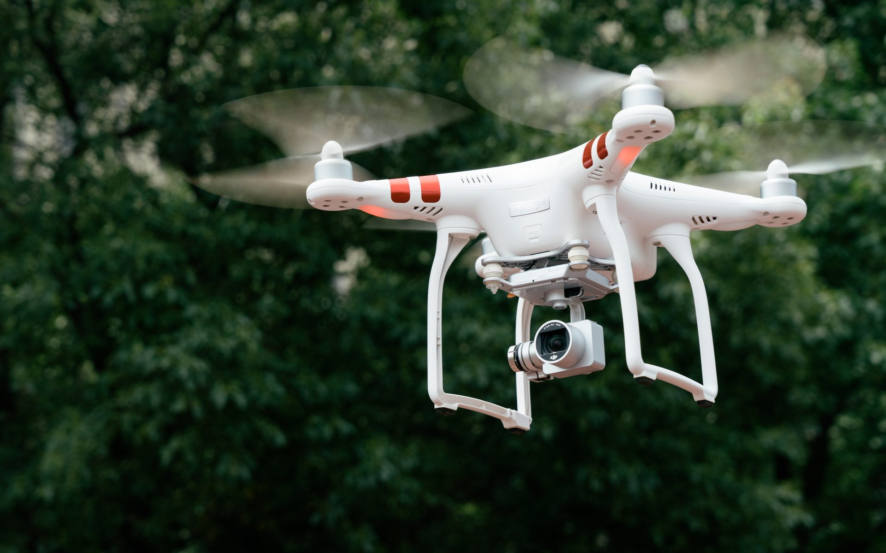

Perception and navigation technologies proven in vehicle mass production, transplanted to drone platforms

Low-altitude flight raises the bar for perception and positioning.
VOYISL extends its ground-mobility intelligence system upward,
delivering low-altitude environmental perception, fusion positioning and flight decision-control capabilities for drone inspection, low-altitude logistics and park security —
giving aircraft an "eye" and a "brain".
Built on multi-camera vision and deep-learning algorithms, the system detects low-altitude obstacles such as power lines, towers and buildings, outputting their bearing and distance in real time to give aircraft reliable obstacle-avoidance capability.
Fusing vision, inertial navigation and satellite positioning, the system maintains continuous, stable position awareness and trajectory holding even where satellite signals are limited — between buildings or under bridges.
Perception, positioning and control technologies for ground mobility are highly homologous to those of low-altitude aircraft. The mass-production-proven software and hardware stack can be reused directly, accelerating intelligent deployment and scaled adoption of low-altitude equipment.